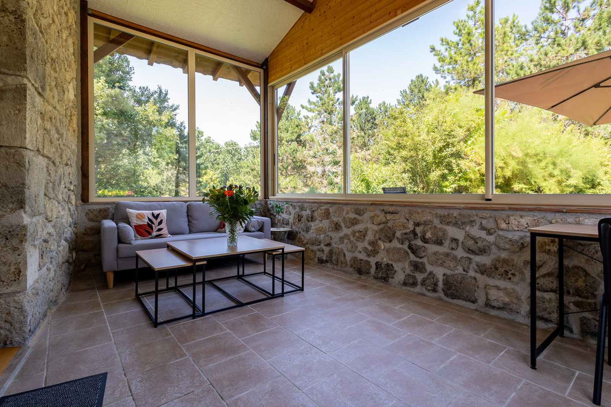
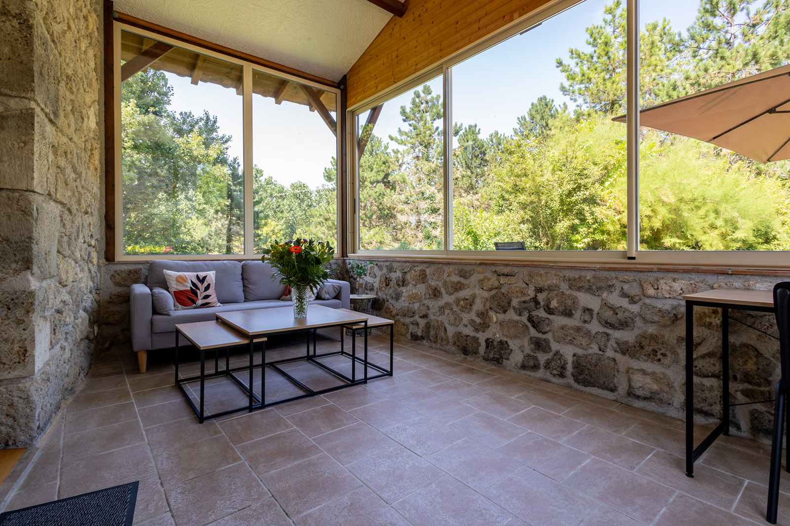
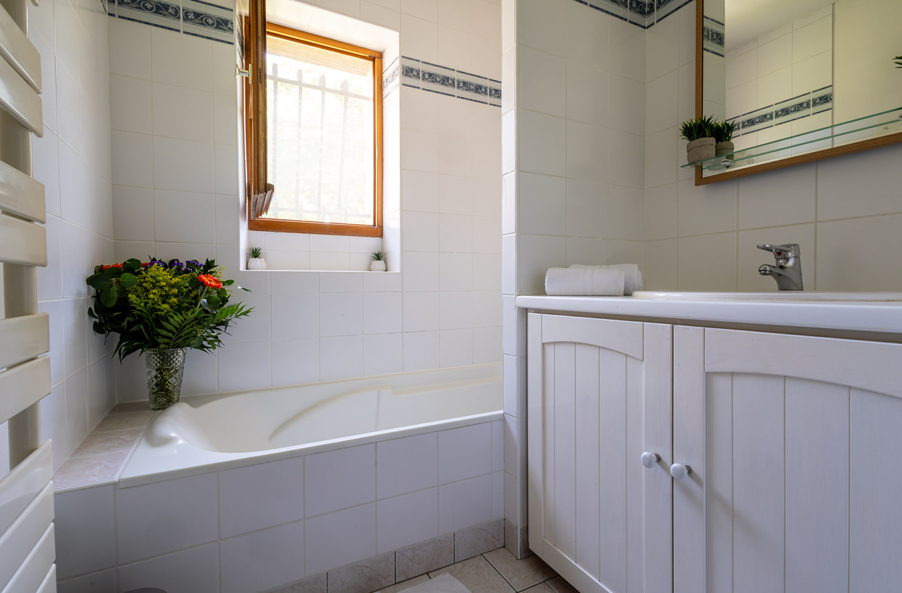
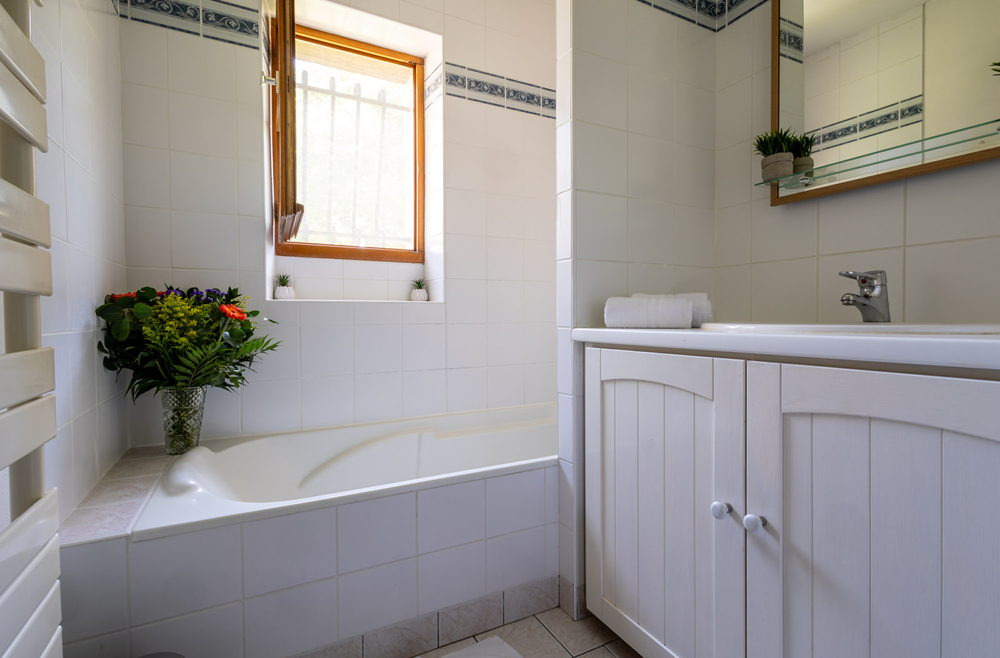

Location de Gîte 4 personnes avec piscine
Gîte de la Sapinière
Location Vacances famille à Nérac – Lot et Garonne. Le gîte de la Sapinière est le plus privatif de nos gîtes. D'une surface de 75m2, il est situé dans un bâtiment en pierre du pays indépendant, il profite d’une très agréable véranda et d’une grande terrasse privée sans vis à vis avec mobilier de jardin, barbecue à bois, chaises longues et parasol pour votre confort. 4 personnes maximum peuvent y être accueillies dans 2 chambres et 1 salle de bain. Ce gîte est entièrement de plain-pied.
Ce gîte peut loger confortablement 4 personnes et se compose de :
- Une chambre à coucher indépendante avec un lit double king size de 180 cm
- Une chambre à coucher indépendante avec un lit double queen size de 160 cm (pouvant être aménagé en deux lits de 80 cm à la demande)
- Une salle de bain avec baignoire (à partager entre les deux chambres) et un WC séparé
 


 



Chaque chambre est équipée d'un ventilateur en été, du chauffage central en hiver et chaque salle de bain a son propre sèche-cheveux et sèche-serviette dans la salle de bain. La pièce à vivre inclut une cuisine ouverte sur le salon/salle à manger et un accès direct à la véranda et terrasse privée avec mobilier de jardin (tables et chaises pour 4 personnes et chaises longues), parasol et barbecue à bois (charbon de bois non inclus. À fournir par le locataire).
Le wifi est inclus et l'accès à la piscine est partagée avec tous les occupants du domaine (ouverte du 15 juin au 15 septembre – selon météo).
Les animaux domestiques ne sont pas admis dans notre location gîte avec piscine à Nérac car nous sommes dans un écrin de verdure sauvage de 17ha où la chasse est interdite et nous privilégions que la faune sauvage ne soit pas perturbée par les animaux domestiques.
Nos gîtes sont ouverts toute l'année pour des séjours de 2 nuits minimum. Ils sont disponibles uniquement à la semaine (du samedi au samedi) entre juillet et août.
Chaque gîte peut-être réservé au mois à partir d'octobre jusqu'au mois avril. Les locations mensuelles comprennent tout le linge de lit et de toilette, le ménage final, l'électricité, l'eau, et chauffage (selon conditions mentionnées au contrat).
Equipement Tout Confort
La cuisine est entièrement équipée, vous y trouverez un lave vaisselle, un grand frigo, un congélateur indépendant, une plaque vitro-céramiques 4 feux avec hotte, cafetière classique à filtres et bouilloire électrique, un grille pain, un four électrique, un micro ondes, vaisselle et ustensiles de cuisine, une machine à laver avec tancarville pour le séchage.
Voyagez légers !
Toute location de nos gîtes inclut dorénavant les draps des lits (lits faits à l'arrivée), les serviettes de toilettes (serviettes de piscine non fournies) et le ménage final. Le fond de cuisine est aussi là avec huile, vinaigre, sel, poivre et épices, ainsi qu'une éponge propre, du liquide vaisselle, sac poubelle et quelques tablettes lave-vaisselle pour commencer votre séjour.
Kid Friendly
Aux gîtes du Pehillo, nous mettons tout en œuvre pour vous accueillir confortablement avec vos enfants et mettons à votre disposition dans chacun de nos gîtes, sur simple demande : un lit bébé, une chaise haute, un pot de propreté et un réhausseur de WC.
Vie en Communauté
Les gîtes de Pehillo sont en gestion libres et autonomes. Cela implique un certain sens de la vie en communauté pour respecter les autres occupants du domaine. Pour ces raisons, les fêtes et évènements ne sont pas autorisés.
Tarifs et Disponibilités
Les tarifs exacts et disponibilités sont disponibles sur notre moteur de
réservation.
Cliquez sur "Réserver" ci-dessous pour plus d'informations.
Gîtes de 6 personnes
Nos 2 autres gîtes (Gîte du Pigeonnier et Gîte de la Source) avec 3 chambres, 2 salles de bain et terrasses privées sont aussi disponibles à la location pour 6 personnes.
Location Complète du Domaine
Vous souhaitez louer les 3 gîtes de Pehillo? Le domaine complet est aussi disponible à la location pour 16 personnes.